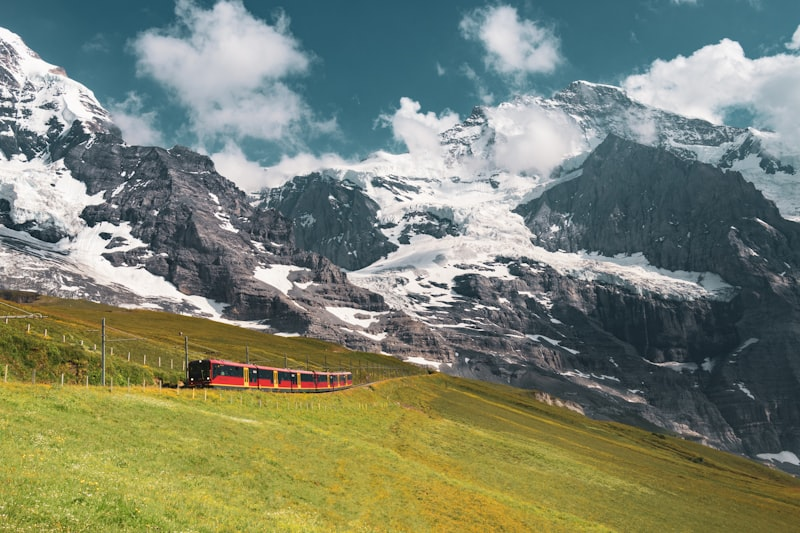

Le Sommet des Alpes Bernoises
La Jungfrau culmine à 4 158 mètres d'altitude dans les Alpes bernoises, à la limite entre les cantons du Valais et de Berne. Son nom signifie "jeune femme" en allemand, en référence aux augustiniennes qui possédaient des alpages au nord-ouest de la montagne.
Avec l'Eiger (3 967 m) et le Mönch (4 107 m), elle forme un trio légendaire visible à des dizaines de kilomètres. Ces trois sommets constituent la silhouette la plus reconnaissable des Alpes suisses.


Le Jungfraujoch — "Top of Europe"
Le Jungfraujoch est un col à 3 463 m d'altitude entre le Mönch et la Jungfrau. Il abrite la gare de chemin de fer la plus haute d'Europe (3 454 m). Depuis 1912, le Jungfraubahn conduit les visiteurs via un tunnel de 7 km creusé sous l'Eiger et le Mönch.
Plus d'un million de visiteurs s'y rendent chaque année, attirés par les panoramas incomparables sur le glacier d'Aletsch et les sommets environnants.
Ce qu'il faut voir au Jungfraujoch
- L'Observatoire du Sphinx (3 571 m) et sa plateforme panoramique
- Le Palais de Glace — le plus haut du monde
- La chocolaterie Lindt la plus haute du monde
- Le bureau de poste le plus élevé d'Europe (code postal 3081)
- Vue directe sur le glacier d'Aletsch
La Construction du Jungfraubahn
L'industriel suisse Adolf Guyer-Zeller a imaginé ce projet en 1893. La construction a débuté en 1896 et s'est achevée le 21 février 1912 après 16 ans de travaux dans des conditions extrêmes.
Le chantier a connu six grèves, huit changements de direction et 30 ouvriers y ont perdu la vie lors d'accidents de dynamitage. Le tunnel de 7 km, percé entièrement dans la roche sous l'Eiger et le Mönch, reste l'une des prouesses techniques les plus remarquables du XXe siècle.

Histoire de l'Alpinisme
Première ascension
Par les frères Meyer (Johann Rudolf et Hieronymus) avec Joseph Bortis et Alois Volker — 3 jours d'ascension depuis Grindelwald.
Première ascension hivernale
Par Margaret Brevoort et William Coolidge, dans des conditions extrêmes de froid et de vent sur l'arête nord-est.
Première ascension sans guide
Par Frederick Gardiner, marquant une étape dans l'évolution de l'alpinisme vers l'autonomie des grimpeurs.
Première ascension de la face nord
Par Hans Lauper — une paroi redoutée longtemps jugée infranchissable par les alpinistes de l'époque.